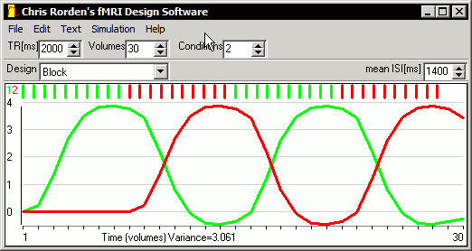

fMRI Simulator
fMRI Simulator¶
Designing an fMRI study is a daunting task. Note that with fMRI you have to tradeoff predictability with statistical efficiency. Completely random event related designs will inherently have low power, requiring long scanning sessions. While block designs offer optimal statistical power, but the participant can anticipate the upcoming type of condition. You can download the software here:
This software (available below for Windows or Macintosh OSX) is useful for maximizing predictable variability for a given scan time, sequence, and sampling rate (TR). These aspects are beyond the scope of this web page: for more details, see my class . Briefly, scanning for longer will provide more samples to improve power. There are many ways we can adjust our sequence to tradeoff spatial resolution, spatial distortion, sampling rate and signal to noise (e.g. bandwidth, parallel acquisition, resolution). These methods can be used to reduce the TR, providing more samples though each will have less signal and exhibit more autocorrelation.
This software can generate convolved models for a few basic designs, and also allows you to load in your own custom text files. The software uses the canonical hemodynamic response function used by SPM to convolve events, reporting efficiency as the mean variance accross conditions. This efficiency is only relative – if you change the TR or number of volumes, many efficiency parameters will alter. Also note that this software generates a general efficiency value (the predictable variance of a condition), but does not calculate whether different conditions create independent signals. Finally, note that this software (like most analysis packages) assumes completely linear addition of singal from multiple events.
{kind=link}
Top toolbar¶
The upper toolbar allows you to set general settings for your study. Specifically, you can adjust your TR (how often you will observe the brain) and the number of volumes (how many observations of the brain you will collect). for example, if you have a TR of 3000ms and collect 60 volumes, your scanning session will last 3 minutes. This toolbar also allows you to adjust how many conditions you want to examine. For example, if you want the participant to press their left hand on some trials, their right hand on some trials, and rest on some trials, you would want to enter 3 conditions.
Lower toolbar¶
The lower toolbar includes a drop-down menu that allows you to select your paradigm design type. Different options will appear on this toolbar based on your paradigm choice. You options are:
Block. This will generate a classic ‘box car’ or ‘epoch’ design, where the participant will repeat the same condition for around 12 seconds and then switch to a different task. This is the most efficient design, but it is very predictable. You will be able to adjust the “Mean ISI” (that is, how frequently trials are presented within a block, so if you set an ISI of 1400ms, the participant will see one trial every 1.4 seconds.
Permuted block. This starts with a classic block design, but mutates it to reduce predictability as suggested by Liu, 2004 . In addition to mean ISI, you are also able to set the number of permutations made. The more permutations, the less predictable the task is.
Event-related Fixed ISI. In this paradigm, trials are presented at a fixed rate and the order of the conditions is completely randomized. The onset time of the trial is predictable, but the condition is not. Fixed ISI event related tasks tend to have low efficiency, but are sometimes used with very long ISIs to measure the actual shape of the HRF. With this option you can set both the ISI as well as the number of iterations. If you set the number of iterations to zero, the order of conditions is completely random. If you set the number of iterations to a 300, the program will create 300 randomized sessions and show you the one that generates the largest variability in HRF (and therefore good efficiency. If you set the number of iterations to a very large number, the trial order (and efficiency) will be similar to a block design. There is also a check box named ‘Counter balance’ – if this is checked, there will be first-order counterbalancing (in other words, there will be as many trials where condition 1 precedes condition 2 as trials where condition 2 precedes condition 1). Counterbalancing makes the conditions a bit less predictable (if you run many iterations of an unbalanced design, the optimal design will have many repeats of each condition, so on average condition 1 is usually preceded by condition 1). However, counterbalancing reduces the efficiency of your design and the precise number of events in each condition and counterbalancing is usually only approximate. Note that with fixed ISI designs it is generally recommended that your ISI is not evenly divisible by your TR.
Event-related Exponential ISI. This option generates trials where the order of conditions is randomized and the onset time of stimuli is jittered using an exponential function as suggested by Dale, 1999 . The exponential distribution means that their are lots of trials that occur close together in time, followed by a few long gaps (rest periods). For single-condition experiments and short ISIs, this configuration offers much more efficiency than the fixed ISI design. However, most tasks are limited by the minimum time between trials (how fast a participant can process the trial), and for this design the mean ISI must necessairly be longer than the minimum ISI. Therefore, for conditions with multiple conditions and reasonably long ISIs this design can be less efficient than the fixed ISI condition. This design has the same options as the fixed ISI event related design, but also adds an adjustment for the minimum ISI. See Friston et al. (1999) for a complete description of these issues.
Event-related Random ISI. This is just like the Exponential ISI, except that the ISI is chosen from a flat distribution instead of an exponential distribution. In other words, if you set a minimum ISI of 1000msec, and a mean ISI of 2000msec, then the time between trials will vary from 1-3sec with approximately as many short gaps as long gaps.
Preferences¶
The Help/Preferences command allows you to set a few useful settings. These include:
Optimal block length: blocks near 12sec offer in duration are maximally efficient, but for some tasks it takes a while for the participant to get used to a particular task. Very long blocks (~40sec) are not recommended, as fMRI signal has low-frequency drift.
Double-gamma HRF: if checked, the software emulates the hemodynamic response function of SPM, while if unchecked the model is similar to FSL.
Hide final condition: If checked, an experiment with 3 conditions will only show 2 lines, for the two active tasks. This is useful if you want to include ‘rest’ trials, and do not want to see distracting HRF patterns (we usually do not look explicitly model rest, as it is implicitly the lack of activity in the other conditions).
Always use the same randomization: If checked, the iterations and permutations used will always be identical. This allows you to get precisely the same curves with the same settings. If unchecked, a design that uses iterations or permutations will always generate a unique solution.
Useful links¶
Optseq allows you to optimize a paradigm for a particular statistcal contrast. The web page has some very helpful powerpoint slides.
RSFgen is a AFNI tool for paradigm design.
This is a very technical paper, but it is the curcial manuscript for understanding optimal designs: K. J. Friston, E. Zarahn, O. Josephs, R. N. A. Henson, A. M. Dale (1999) Stochastic Designs in Event-Related fMRI, NeuroImage, 10: 607-619. PMID: 10547338.</a>